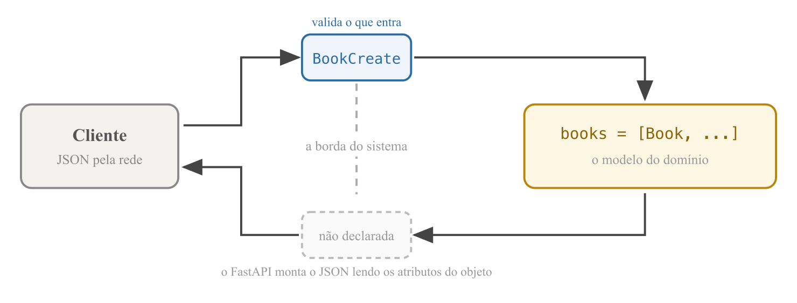

APIs REST
e URIs
Programação Avançada — Aula 03
Universidade Unirios
O ponto de partida
books = [
{"id": 1, "name": "Dom Casmurro"},
{"id": 2, "name": "O Hobbit"},
{"id": 3, "name": "Clean Code"},
]
Quatro rotas sobre essa lista: GET /health, GET /api/books (filtro ?name=), GET /api/books/{book_id} e POST /api/books, que recebe um dicionário sem validação. Dois defeitos:
- POST sem o campo
nameresponde 500: o cliente enviou dados errados, mas a falha ocorreu no servidor; - O id vem de
len(books) + 1— e não existe rota para remover um livro.
Objetivos da aula
- T-3 Definir o que é uma API e o que ela oculta;
- T-3 Identificar os componentes de uma URI;
- T-3 Explicar REST: origem, definição, recursos, representações e verbos;
- Modelar o recurso Book como classe e manter a coleção como lista de objetos;
- Completar o CRUD de Books com DELETE e PUT, com geração de ids defensável;
- Validar a entrada das rotas com um schema Pydantic.
Dicionário ou classe?
Dicionário
- Aceita qualquer chave, inclusive digitada errada;
- Não garante campo algum;
- O conhecimento sobre "o que é um livro" fica espalhado pelo arquivo.
Classe
- Um único ponto de entrada —
__init__; - Concentra a definição do conceito;
- Um objeto tem identidade e um conjunto fixo de atributos.
O modelo Book
class Book:
def __init__(self, id: int, name: str):
self.id = id
self.name = name
def __repr__(self):
return f"Book(id={self.id}, name={self.name!r})"
__init__é o único portão de entrada: não existe Book semide semname;__repr__define como o objeto se apresenta ao ser impresso: ao depurar, exibe um livro legível;- Nada aqui é FastAPI: é Python puro. A escolha é de modelagem, não do framework.
A coleção passa a guardar objetos
books = [
Book(id=1, name="Dom Casmurro"),
Book(id=2, name="O Hobbit"),
Book(id=3, name="Clean Code"),
]
@app.get("/api/books/{book_id}")
def read_book(book_id: int):
for book in books:
if book.id == book_id:
return book
raise HTTPException(status_code=404, detail="Book not found")
Onde havia chave de dicionário, agora há atributo de objeto: book.id, book.name.
SELECT: é esse o mapeamento que um ORM automatiza.Objetos viram JSON — sem contrato declarado
[{"id":1,"name":"Dom Casmurro"}, {"id":2,"name":"O Hobbit"}]
- A rota devolve objetos
Book, não dicionários — e ainda assim a resposta sai em JSON; - O FastAPI, ao não reconhecer o tipo, inspeciona os atributos da instância e monta o JSON a partir deles;
- Funciona, mas é o framework inferindo: nada foi declarado sobre o formato da resposta.
O POST passa a construir um objeto
@app.post("/api/books", status_code=201)
def create_book(book: dict):
new_book = Book(id=len(books) + 1, name=book["name"])
books.append(new_book)
return new_book
- Entra dicionário, sai Book: o dado do cliente só se torna objeto ao passar pelo
Book(...); - Dentro do sistema circulam apenas objetos; o dicionário cru existe só na fronteira;
- O parâmetro continua
book: dict— POST com corpo{}ainda responde 500.
Remoção: DELETE /api/books/{book_id}
@app.delete("/api/books/{book_id}", status_code=204)
def delete_book(book_id: int):
for book in books:
if book.id == book_id:
books.remove(book)
return
raise HTTPException(status_code=404, detail="Book not found")
- 204 No Content: a operação teve êxito e não há conteúdo a devolver;
- O
returnvazio não é descuido — o 204 proíbe corpo na resposta; - Recurso inexistente → o mesmo 404 do GET por id: a resposta não muda com o verbo.
200 e 204, lado a lado
GET /api/books/2 DELETE /api/books/1
HTTP/1.1 200 OK HTTP/1.1 204 No Content
server: uvicorn server: uvicorn
content-length: 26 (não existe)
{"id":2,...} (nada)
- O 200 informa
content-length; o 204 não tem corpo para medir; - DELETE repetido no mesmo id → 404: o estado do servidor é o mesmo, apenas o status muda.
Verificável com curl -i · RFC 9110 — HTTP Semantics, IETF, 2022
Remoções quebram a geração de ids
DELETE /api/books/2 → 204 (restam ids 1 e 3; len = 2)
POST {"name": "Refactoring"} → id = len(books) + 1 = 3 ... já existe
GET /api/books → dois livros com id 3
GET /api/books/3 → devolve "Clean Code": o novo é inalcançável
- Um
DELETE /api/books/3removeria o livro errado — o cliente pede um e a API apaga outro; - Sem identidade única não há GET, PUT nem DELETE confiáveis;
- A conclusão: o próximo id não pode depender do tamanho da lista.
Correção: o próximo id vem do último
def next_book_id():
if not books:
return 1
return books[-1].id + 1
@app.post("/api/books", status_code=201)
def create_book(book: dict):
new_book = Book(id=next_book_id(), name=book["name"])
books.append(new_book)
return new_book
books[-1]é o último elemento — como cada livro novo entra no fim, é sempre o de maior id;- O caso da lista vazia vem primeiro: sem ele,
books[-1]levantariaIndexError. A numeração recomeça em 1.
O limite desta regra
DELETE /api/books/3 → 204 (era o último da lista)
POST {"name": "Duna"} → id = books[-1].id + 1 = 3
o id do livro que acabou de sair
- Não há colisão — o livro antigo não existe mais —, mas há reaproveitamento;
- Um cliente que tivesse guardado
/api/books/3passaria a receber outro livro, sem erro algum; - É a diferença entre um id que só cresce e um id calculado a partir do estado atual.
AUTO_INCREMENT de um banco de dados — não reaproveita nenhum.Recapitulando — o recurso Book
- Book é uma classe;
booksé uma lista de objetos; - O POST constrói o objeto na fronteira: entra dicionário, sai Book;
- DELETE responde 204 sem corpo, e 404 para id inexistente;
- O próximo id deriva do último livro da lista — e volta a 1 quando ela esvazia;
- Ainda em aberto: a validação da entrada e a declaração da saída.
O conceito de API
- Origem do termo: a primeira ocorrência registrada de application program interface está em "Data structures and techniques for remote computer graphics", de Ira W. Cotton e Frank S. Greatorex Jr., AFIPS Fall Joint Computer Conference, 1968;
- O problema deles é o mesmo daqui: um programa precisava usar recursos de outra máquina, e era necessário descrever o que podia ser pedido sem descrever como era feito.
COTTON, I. W.; GREATOREX JR., F. S. Data structures and techniques for remote computer graphics. AFIPS FJCC, 1968
O fundamento: ocultação de informação
Cada módulo esconde uma decisão de projeto e expõe apenas a interface pela qual os demais o utilizam.
- Princípio estabelecido por David L. Parnas em "On the Criteria To Be Used in Decomposing Systems into Modules" (Communications of the ACM, v. 15, n. 12, 1972);
- É o encapsulamento da orientação a objetos, aplicado à fronteira entre sistemas;
- A API é essa interface, publicada e assumida como compromisso.
PARNAS, D. L. On the Criteria To Be Used in Decomposing Systems into Modules. CACM, 1972
Nem toda API é uma API web
Uma API é o contrato que um software oferece para ser usado por outro software: quais operações existem, o que cada uma exige e o que devolve.
- Já utilizadas nesta disciplina:
books.append(...)é a API dalist;open(...), a API de arquivos;@app.get(...), a API do FastAPI; - A API web é o caso particular em que o contrato é exposto pela rede, sobre HTTP — o consumidor pode estar em outra máquina, em outra linguagem;
- Um frontend é exatamente esse consumidor: tudo o que ele sabe do backend é a API.
O contrato legível por máquina
- O FastAPI publica em
/openapi.jsonuma descrição formal do contrato no padrão OpenAPI; - Criado como Swagger por Tony Tam em 2011; doado em 2015 à Linux Foundation, onde foi renomeado para OpenAPI Specification;
- A página
/docsdo FastAPI é apenas um leitor desse arquivo; - Alterar um campo da resposta é alterar o contrato — e quebra todos os clientes ao mesmo tempo.
OpenAPI Initiative — spec.openapis.org · Documentação oficial do FastAPI — fastapi.tiangolo.com
Recapitulando — API
- Termo registrado em 1968; fundamento em Parnas (1972): ocultação de informação;
- API é contrato: operações, entradas e saídas — sem revelar a implementação;
- API web é o caso em que esse contrato trafega por HTTP;
- OpenAPI descreve o contrato em formato que máquinas leem.
URI — Uniform Resource Identifier
"Uma URI é uma sequência compacta de caracteres que identifica um recurso abstrato ou físico."
- Origem: proposta por Tim Berners-Lee no projeto original da web; a sintaxe genérica atual foi formalizada na RFC 3986 (Berners-Lee, Fielding e Masinter, 2005);
- Propósito: dar à rede uma forma uniforme de identificar qualquer recurso, independente de protocolo ou formato.
RFC 3986 — Uniform Resource Identifier (URI): Generic Syntax, IETF, 2005
A estrutura de uma URI

A mesma estrutura descreve qualquer endereço da web — inclusive o do nosso servidor.
RFC 3986 — Uniform Resource Identifier (URI): Generic Syntax, IETF, 2005
Os componentes, um a um
- Esquema — o protocolo da conversa:
http,https(HTTP sobre conexão cifrada),mailto...; - Host — nome ou IP da máquina; o nome é o que o DNS traduz;
- Porta — o programa dentro da máquina. Cada esquema tem porta padrão (80 para http, 443 para https) — a nossa
:8000aparece porque não é a padrão; - Caminho — hierárquico, como diretórios: identifica o recurso;
- Query — os pares
chave=valorapós o?: ajustam o pedido; - Fragmento — a âncora após o
#: uma parte dentro do documento.
RFC 3986 — Uniform Resource Identifier (URI): Generic Syntax, IETF, 2005
O fragmento não é enviado ao servidor
https://developer.mozilla.org/pt-BR/docs/Web/HTTP#recursos
└─ uso local:
o navegador não envia
- Verificável na aba Network: o
#recursosnão aparece na requisição; - URI × URL: URL é a URI que, além de identificar, informa onde e como obter o recurso — toda URL é uma URI;
- Na prática da web os termos quase se confundem; o essencial é saber ler as partes.
RFC 3986 — Uniform Resource Identifier (URI): Generic Syntax, IETF, 2005
Recapitulando — URIs
- esquema :// host : porta / caminho ? query # fragmento;
- Porta padrão do esquema não aparece — a nossa
:8000aparece; - O caminho identifica o recurso; a query ajusta o pedido;
- O fragmento é de uso local: o servidor não o recebe.
A origem do REST
- REST — REpresentational State Transfer;
- Definido por Roy T. Fielding no capítulo 5 da tese de doutorado Architectural Styles and the Design of Network-based Software Architectures (Universidade da Califórnia, Irvine, 2000);
- Fielding foi coautor da especificação do HTTP/1.1 e cofundador do projeto Apache;
- Propósito: identificar os princípios arquiteturais que permitiram à web escalar — e orientar o projeto de sistemas construídos sobre ela.
FIELDING, R. Architectural Styles and the Design of Network-based Software Architectures, 2000
Um estilo arquitetural definido por restrições
REST é um estilo arquitetural para sistemas de hipermídia distribuídos — um conjunto de restrições que, respeitadas, conferem ao sistema as propriedades da web.
- Não é biblioteca nem framework: é um critério de projeto;
- As seis restrições: cliente–servidor · stateless · cache · interface uniforme · sistema em camadas · código sob demanda (opcional);
- As duas em destaque são as que moldam o desenho de uma API; a tese vai além (hipermídia, HATEOAS) — o que o mercado chama de "API REST" é o núcleo: recursos, verbos e status codes.
FIELDING, R. Architectural Styles and the Design of Network-based Software Architectures, 2000
Recurso e representação
- Recurso — na formulação de Fielding, "qualquer informação que possa ser nomeada": um livro, a coleção de livros, um usuário;
- Cada recurso é identificado por uma URI — por isso a estrutura da URI veio primeiro;
- Representação — o que viaja na resposta não é o recurso, mas uma representação do seu estado em um formato;
- No nosso servidor o recurso é um objeto
Bookna memória; o que sai pela rede é JSON. O mesmo recurso poderia ser representado em HTML, XML ou PDF.
FIELDING, R., 2000 · RICHARDSON, L.; RUBY, S. RESTful Web Services, 2007
A interface uniforme: verbos sobre recursos

Poucos verbos padronizados sobre muitos substantivos — em vez de uma operação nomeada para cada caso (/getBooks, /criarLivro).
FIELDING, R., 2000
Verbos HTTP e as operações CRUD
| CRUD | Verbo | Na coleção | No item | Status |
|---|---|---|---|---|
| Create | POST | cria um livro | — | 201 |
| Read | GET | lista | um livro | 200 |
| Update | PUT | — | substitui os dados | 200 |
| Delete | DELETE | — | remove | 204 |
- Um método é seguro quando não modifica o recurso (GET) e idempotente quando repeti-lo produz o mesmo efeito de uma execução (GET, PUT, DELETE — POST não);
- O segundo DELETE devolveu 404, mas o estado do servidor ficou idêntico: é isso que idempotência significa;
- PATCH (atualização parcial) fica registrado como menção — o PUT com schema pequeno atende o projeto.
RFC 9110 — HTTP Semantics, IETF, 2022 · RICHARDSON, L.; RUBY, S. RESTful Web Services, 2007
Convenções de URI adotadas no projeto
- Substantivos, não verbos — o verbo já vai no método:
GET /api/books, nuncaGET /api/getBooks; - Coleção no plural (
/books); item = coleção + id (/books/3); - O mesmo parâmetro com o mesmo nome em todas as rotas: sempre
book_id; - GET nunca modifica o recurso — navegadores e indexadores assumem que repetir um GET é seguro.
Discussão: por que GET /api/books/delete/3 seria uma má escolha?
Decisão registrada no ADR-0002 do projeto · RICHARDSON; RUBY, 2007
A restrição stateless
- Cada requisição contém toda a informação necessária para ser atendida;
- O servidor não guarda estado de sessão entre requisições;
- Ganhos apontados por Fielding: visibilidade, confiabilidade e escalabilidade;
- Consequência direta: um token de autenticação precisa viajar em cada requisição — não existe "sessão aberta" no servidor.
FIELDING, R. Architectural Styles and the Design of Network-based Software Architectures, 2000
Recapitulando — REST
- Estilo arquitetural definido por Fielding (2000) — restrições, não biblioteca;
- Recursos identificados por URIs; representações viajam em JSON;
- Interface uniforme: poucos verbos × muitos substantivos = CRUD;
- URIs com substantivos no plural; GET nunca modifica;
- Stateless: cada requisição se explica sozinha.
O mapa de rotas do Reading Tracker
| Verbo + URI | O que faz | Estado |
|---|---|---|
GET /api/books | lista os Books | implementado |
GET /api/books/{book_id} | um Book pelo id | implementado |
POST /api/books | cria um Book | implementado |
DELETE /api/books/{book_id} | remove um Book | implementado |
PUT /api/books/{book_id} | atualiza um Book | projetado |
POST /signup | cadastra um User | projetado |
GET /users/{user_id}/books | os Books de um User | projetado |
POST /books/{book_id}/progress | registra um Reading Update | projetado |
Elaborado a partir dos substantivos do domínio: User, Book, Reading Update. Projetar a URI antes de implementá-la é o que mantém a interface uniforme.
Observações sobre o mapa
/signupfoge da regra do substantivo — é uma ação. Exceção pragmática consagrada: cadastro e login são operações, não recursos;/users/{user_id}/booksexpressa hierarquia: a URI documenta a relação entre os recursos;GET /users/{user_id}/booksaceita qualqueruser_id: a URI identifica o recurso, mas não diz quem pode acessá-lo. Identificação e autorização são problemas distintos.
O problema: corpo sem validação
No Swagger: POST /api/books com corpo {}
HTTP/1.1 500 Internal Server Error
- O cliente enviou dados errados, mas a falha ocorreu no servidor (
book["name"]→KeyError); - 5xx atribui a culpa ao servidor — e o cliente não descobre o que enviou de errado;
- O dicionário cru aceita qualquer conteúdo: a validação precisa ocorrer na borda.
Pydantic: validação por anotações de tipo
from fastapi import FastAPI, HTTPException
from pydantic import BaseModel
class BookCreate(BaseModel):
name: str
- Biblioteca de validação de dados criada por Samuel Colvin (2017); as anotações de tipo do Python são a fonte das regras;
- É a base de toda a validação do FastAPI, e vem instalada como dependência dele;
- Um schema declara campos e tipos:
BookCreateexige umnamedo tipo string.
Documentação oficial do Pydantic — docs.pydantic.dev · Documentação oficial do FastAPI — fastapi.tiangolo.com
O schema aplicado à rota POST
@app.post("/api/books", status_code=201)
def create_book(book: BookCreate):
new_book = Book(id=next_book_id(), name=book.name)
books.append(new_book)
return new_book
book: BookCreate— o FastAPI valida o corpo antes de chamar a função;- O acesso passa a ser
book.name: atributo, não chave de dicionário; - É o mesmo mecanismo do
book_id: int— agora aplicado ao corpo da requisição.
A validação responde 422 com diagnóstico
{
"detail": [
{
"type": "missing",
"loc": ["body", "name"],
"msg": "Field required"
}
]
}
- De 500 (falha do servidor) para 422 (pedido inválido) — a família correta;
- A resposta indica onde (
body → name) e o quê (Field required); {"name": 123}também é barrado:"Input should be a valid string".
Duas classes, dois papéis

Book— o modelo do domínio: o que o sistema guarda;BookCreate— o contrato de entrada. O cliente não envia o id: quem o atribui é o servidor;- A saída não tem schema declarado — o contrato está cumprido pela metade.
Atualização: PUT /api/books/{book_id}
@app.put("/api/books/{book_id}")
def update_book(book_id: int, book: BookCreate):
for stored_book in books:
if stored_book.id == book_id:
stored_book.name = book.name
return stored_book
raise HTTPException(status_code=404, detail="Book not found")
- O id viaja no caminho (identifica o recurso); os dados novos, no corpo (a nova representação);
- O corpo reutiliza
BookCreate: atualizar exige os mesmos campos que criar, e o id nunca vem no corpo; - O objeto é mutável: troca-se o atributo no lugar, sem recriar nem reinserir na lista;
- O mesmo PUT duas vezes → o mesmo resultado: a idempotência da teoria, verificada.
A documentação acompanha a API
| Método | Rota | O que faz |
| ------ | ---- | --------- |
| GET | /health | Verifica se a API está no ar |
| GET | /api/books | Lista os livros; query param opcional name |
| GET | /api/books/{book_id} | Um livro pelo id (404 se não existir) |
| POST | /api/books | Cria um livro; corpo validado pelo BookCreate |
| PUT | /api/books/{book_id} | Atualiza o nome de um livro (404 se não existir) |
| DELETE | /api/books/{book_id} | Remove um livro; 204 sem corpo (404 se não existir) |
A tabela de endpoints do README.md reflete o estado atual do projeto.
Exercício em sala
- Adicione o campo
author(string, opcional, padrão"") às duas classes, respeitando o papel de cada uma; - Ajuste
create_bookeupdate_bookpara gravar o novo campo; - Teste no Swagger: POST com e sem author — e o GET da lista exibindo os livros iniciais com
authorvazio.
Ao final: quantos lugares foi preciso editar para acrescentar um campo?
author: guarde a sua solução fora do repositório.Síntese da aula
- API é o contrato que um software publica para ser usado por outro, ocultando a implementação (Parnas, 1972);
- URI (RFC 3986): esquema, host, porta, caminho, query, fragmento — e o fragmento não é enviado;
- REST (Fielding, 2000): estilo arquitetural definido por restrições; recursos, representações e interface uniforme;
- Verbos HTTP mapeiam o CRUD; segurança e idempotência são propriedades formais (RFC 9110);
- O recurso Book virou objeto, o CRUD se completou e o id não colide mais;
- Pydantic valida a entrada na borda e o 500 tornou-se 422; a saída segue inferida pelo framework, sem contrato declarado.
Referências
- COTTON, I. W.; GREATOREX JR., F. S. Data structures and techniques for remote computer graphics. AFIPS Fall Joint Computer Conference, 1968. (primeira ocorrência registrada do termo API)
- PARNAS, D. L. On the Criteria To Be Used in Decomposing Systems into Modules. Communications of the ACM, v. 15, n. 12, 1972.
- FIELDING, R. Architectural Styles and the Design of Network-based Software Architectures. Tese de doutorado, UC Irvine, 2000. (cap. 5 — a definição original de REST)
- RFC 3986 — Uniform Resource Identifier (URI): Generic Syntax. IETF, 2005.
- RFC 9110 — HTTP Semantics. IETF, 2022. (semântica dos métodos; segurança e idempotência)
- RICHARDSON, L.; RUBY, S. RESTful Web Services. O'Reilly, 2007.
- OpenAPI Specification — OpenAPI Initiative, spec.openapis.org.
- Documentação oficial do FastAPI — fastapi.tiangolo.com · Documentação oficial do Pydantic — docs.pydantic.dev.
- MDN Web Docs — developer.mozilla.org (HTTP e ferramentas do navegador).